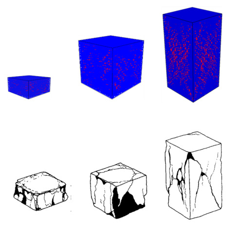
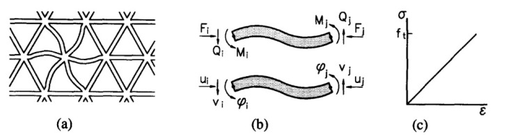
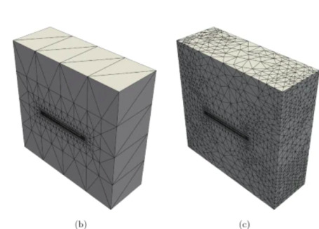

Çatlama, Kırılma (Fracture) Analizi, FEM
Üç boyutta birbirine bağlı kirişlerin dinamiği [1] notları dersler 5-11'de incelendi. Özelde uzay çatıları / çerçeveleri (space frame) yapılarına bakıldı, bu yapıların hissetiği kuvvetleri sonlu öğeler metotu (finite element method) ile hesaplayabildik.
Aslında bu metotu kullanarak bütünsel, tek bir maddenin yüklenmesi durumunda nasıl davranacağını da bulabiliriz. Araştırmacı Schlangen ve onun grubu şöyle bir faraziye yaptılar [2,3], acaba bütünsel bir maddenin iç yapısını (hayali) düğümler / kirişlerle birbirine bağlı bir uzay çatısı olarak göremez miyiz?
Bu sorunun cevabı en azından kırılma, çatlama analizi bağlamında, evet. Araştırmacılar probleme şöyle yaklaştılar; bir maddeyi al, ona dıştan uygulanan yükün iç yansımasının hesabını o madde içinde sanki birbirine bağlı kirişlerden oluşuyormuş gibi yap, ve sonuçları bu şekilde bildir. Çatlama, kırılma noktalarını bulmak için kullanılan numara şöyle, yük sonrası bir döngü içinde her kirişe teker teker bak, eğer o kiriş tek başına dayanabileceği yük sınırını geçmiş ise o kirişi sistemden çıkar. Bu hesapsal çıkartma, o noktada kırılma, çatlamayı simule eder, döngünün bir sonraki aşamasında hesaba bu eksik şekilde devam edilir, ve belki de kopuş farklı öğelerde de görülecektir, amaç çatlamanın yayılması (crack propagation) durumunu saptamaktır.
Yayılma olması mümkündür çünkü tek bir kirişi çıkarttığımızda o noktada bir zayıflık yaratmış oluyoruz, bu belki çıkartılan parçaya bağlı olan diğer parçaların hissettiği yükü arttıracaktır, eğer kapasitelerinin ötesinde bir yüke maruz kalırlarsa onlar da kopuş yaşayabilirler.. Çatlak bu şekilde yayılabilir, hatta tüm materyelin paramparça olması durumu bile ortaya çıkabilir.

Üstteki resimlerde sanal (mavi renkli bloklar) ve gerçek çatlamalar (alt grup) görülüyor.

İki boyutta kullanılan ızgara (mesh) yapısı üstte.
Uzay çerçevesi hesapsal amaçlı, sanal olarak yaratılıyor, bu çerçevenin düğüm ve bağlantı yapısı herhangi bir şekilde oluşturalabilir, ızgara yapısı programcı tarafından seçilecektir. Bilimsel hesaplama alanında ızgara kullanımı bilinmez bir şey değil, pek çok analitik formülü gerçek dünyada çözmek için bir sanal ızgara yaratma tekniği kullanılır. Buradaki bir ek özellik ızgara sisteminin materyel mekaniği literatüründe direk bir karşılığının olması.

Üç boyuttaki ızgara yapısını üstteki resimde görebiliyoruz.
Hesapsal bir ek numara "kopmuş" kirişlerden sonra ortaya çıkan sistemde hesaplara devam etmek için kullanılır. [1] derslerinde gördüğümüz üzere bir kiriş sistemini çözmek için lineer cebir $Ax=b$ denklemini çözeriz. Fakat eğer bir kiriş sistemden çıkartılırsa yeni sistemi çözmek için baştan sonra tüm $Ax=b$ sistemini çözmeye gerek yoktur, çünkü yeni sistem eskisinden çok farklı olmayacaktır, bu sebeple özyineli bir şekilde eski değerleri baz alarak onları yeni sistem için güncelleyen bir çözüm metotu daha hızlı olur. [4] yazısında tarif edilen yaklaşım tam da böyle bir lineer cebir tekniğini gösteriyor.
Kaynaklar
[1] Bayramlı, Fizik
[2] Qian, Multiscale Modeling of Fracture Processes in Cementitious Materials
[3] Schlangen, Garboczi, Fracture simulations of concrete using lattice models: Computational aspects
[4] Üstdüşümlü Matris Sistemini Çözmek
Yukarı